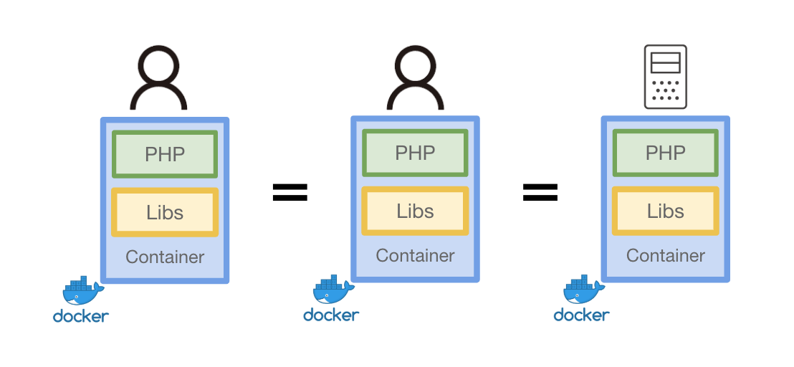
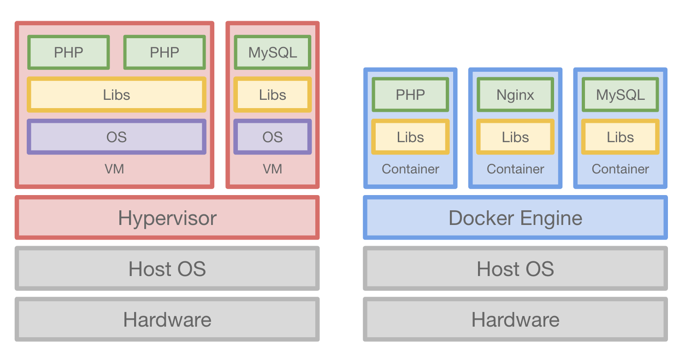

Dockerとは

Dockerって？¶
もはやバズワードではなくデファクトスタンダードの立ち位置を確立しはじめたDockerです。
Dockerはコンテナと呼ばれる仮想化のための技術です。
Dockerを何故使うのか、どんな技術でできているのかをざっくり紹介します。
なぜDockerを使うのか¶
1. ポータビリティ¶

Dockerはパッケージングのための技術と言っても過言ではないでしょう。
特定の環境をパッケージングし、どの環境でも動くポータビリティを保証します。
Dockerは任意のタイミングの状態（ライブラリ・ランタイム・コード）を1つのスナップショットとして保存します。
スナップショットは任意のタイミングの状態を再現することが可能で、そしてそのスナップショットを他の開発者やステージングや本番環境へ配布することが可能です。
当たり前ですがネットワークの疎通など、パッケージングされた外の環境は保証されないです。
2. オーバヘッド¶

従来のVM型の仮想化の場合、物理レイヤーの仮想化から行いますが、DockerはLinuxカーネルの機能を用いて1プロセスとして隔離された環境を実現します。
そのため仮想化レイヤーが少なく、VMと比較して少ないオーバーヘッドで環境を実現することができます。
3. Immutable Infrastructure¶

Immutable Infrastructureはインフラを不変なものとして扱うアプローチです。
今までのインフラはライブラリのアップデートや新しいコードの追加をする際はサーバーへの操作を行い、なんらかの"変更"を加えて実現してきました。
そのインフラを変更するアプローチと反対にインフラを不変なものとして扱うのがImmutable Infrastructureというアプローチです。
変更や追加などの変更が発生する場合は新しく構築してスナップショットを保存し、そのスナップショットを元にサーバーを新しく立ち上げます。
このアプローチにより、確実に動作するスナップショットを手に入れることができます。
Dockerには標準でImmutable Infrastructureのアプローチを実現するために"Dockerfile" と "Image" という機能が標準で備わっています。
"Dockerfile"はInfrastructure as Codeとしての機能です。
ご存知の方も多いと思いますが、Infrastructure as Codeはインフラの構成をコードに落とし込み宣言的に環境を構築する手法です。
コードベースでインフラ環境を定義するためのアプローチです。
"Image"は特定の時点のスナップショットとしての機能を提供します。
Dockerfileで定義・構築された環境をスナップショットとして保存します。
Dockerが流行った理由
コンテナ自体は古くからある概念で、古くからchroot・Jail・LXCのようなプロジェクトが存在します。
なぜDockerを流行った理由の1つとして筆者は 配布の容易性 というのが背景としてあると考えています。
Dockerはコンテナとしての技術だけではなく、そのコンテナのスナップショットを取得して配布を標準の機能として提供しています。
この仕組みを用いることでローカルから本番環境まで用意に同一の環境を使用することができるようになりました。